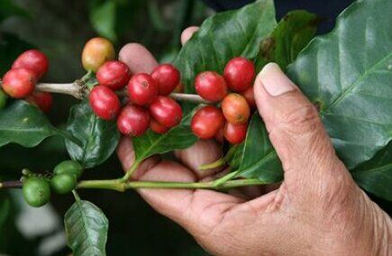
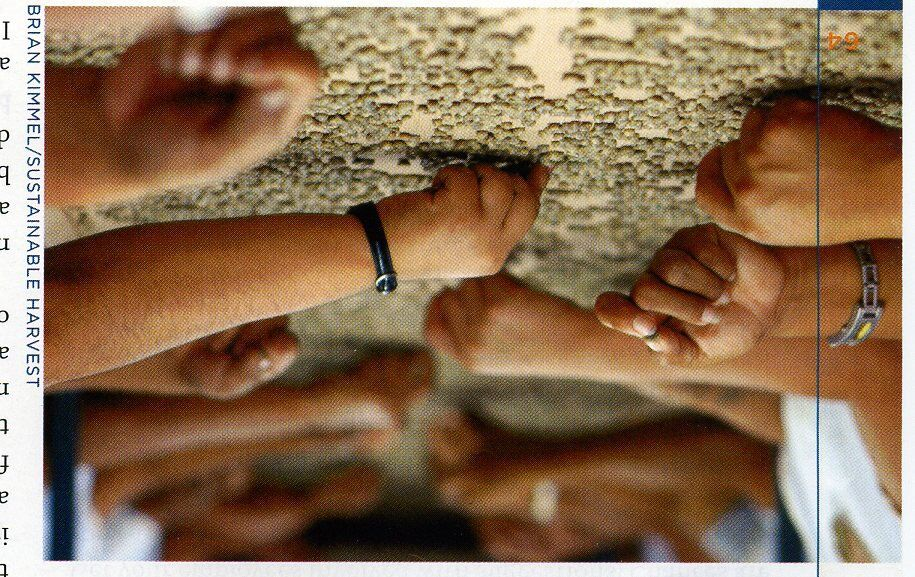
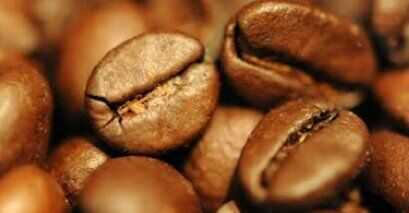

COFFEE FACTS
- A Brief History of Coffee
- The Coffee Industry Today
- From Bean to Cup
- The Basics of Roasting
- Storing and Brewing Tips
A Brief History of Coffee...goats will eat anything.
Around A.D. 800: Legend has it that an Ethiopian goat herder named Kaldi noticed goats from his herd frolicking after eating bright red cherries from a bush, which he then ate as well. Soon fellow countrymen, including Monks, made “power balls” from animal fat and the coffee fruit which they ate for nourishment. Coffee was believed to have medicinal properties, and the fruit and seeds were also used to make wine.
Circa A.D. 1000 - 1600s...Coffee Leaves Africa:
Coffee trees were first cultivated in Mocha, now known as Yemen. Arabia held a monopoly of the “coffee market” for hundreds of years by quickly boiling the harvested coffee cherries to make the seeds infertile. After coffee made its way to Arabia, the Turks were the first to roast the coffee “beans” over an open fire. They crushed the roasted beans and boiled the grounds, creating a “bean broth.”
During A.D. 1400s: The world’s first coffeehouse opens in Turkey.
Early 1600s: A holy man from India smuggled seven coffee beans out of Arabia, wrapped around his belly. On his return home, he planted the beans in the hills of Mysore, India, where the trees flourished.
Coffee Arrives in Europe:
In Europe, roasted coffee first arrived by means of Venetian trade merchants. Coffeehouses spread quickly and became centers for intellectual exchange. Still, some members of the Catholic Church felt that the pope should ban coffee, calling it the drink of the devil. To their surprise, the pope, already an avid coffee drinker, blessed coffee declaring it a truly Christian beverage.
During A.D. 1600s: In an attempt to tap into the “coffee market,” the Dutch allegedly smuggled coffee trees from Malabar and planted them in their greenhouses. They began growing coffee at their forts in India and Java. Within a few years the Dutch colonies had become the main suppliers of coffee to Europe.
In London, women were not allowed in coffeehouses, and anonymously formed The Women’s Petition Against Coffee, saying
“Coffee leads men to trifle away their time, scald their chops, and spend their money, all for a little base, black, thick, nasty, bitter, stinking nauseous puddle water.”
Coffee Sails to the Americas:
A.D. 1689: The first Colonial American coffeehouse opens in Boston. Tea was then the favorite drink of the colonists, but later coffee was declared the national drink in protest of the excessive tea tax levied by the British crown. In 1773, The Boston Tea Party was planned in The Green Dragon coffeehouse.
During the 1700s: The coffee tree found its way to the Caribbean Island of Martinique by means of a French infantry captain who nurtured one small plant across the Atlantic. Within 50 years, this one plant became the predecessor of over 19 million trees on the Island. Coffee cultivation quickly made its way to all other tropical regions of South and Central America.
Back to Africa:
Circa A.D. 1893: Coffee from Brazil was introduced into Kenya and Tanzania, not far from its place of origin in Ethiopia, 600 years earlier, thus ending its journey around the world.
The Origin of Espresso:
Around 1822: While searching for a new way to make coffee, the French built the first crude espresso machine. The Italians perfected this innovation and were the first to manufacture the machine. Espresso has become such an integral part of life in Italy that there are presently over 200,000 espresso bars there.
Coffee in the 21st Century:
Today: Coffee is grown in 50 countries and is the principal commercial crop of over a dozen countries. With over 400 billion cups consumed every year, coffee is the world’s second most popular beverage next to tap water, and has become a giant global industry.
The Coffee Industry Today
Next to military arms and oil, coffee is the largest commodity-based industry in the world with an annual sales volume of over $12 billion. More than 10 billion pounds of coffee beans are harvested per year, providing more than 25 million jobs.
The North American Coffee Market:
Coffee is consumed by 65% of North Americans, yet over a quarter of N.A. consumption is still instant, indicating a huge growth potential for the gourmet industry. There are over 23,000 coffeehouses in N.A.
Coffee Trends:
While coffee consumption worldwide is declining slightly, the market for two types continues to rise.
- Gourmet Coffee: Gourmet coffee is made up of high quality Arabica beans grown in high altitudes of the sub-tropics. This facet of the coffee industry started in the 1960s, and is still rapidly expanding.
- Organic Coffee: Organics are produced without synthetic chemicals that threaten sustainability of soils, ecosystems, and groundwater. As the demand for environmentally-friendly practices has increased, the overall coffee market continues to rise.
Devastating effects of over-production of inferior “technified coffee:”
Technified coffee consists of mega-farms that produce massive amounts of beans that flood the market.
- millions of coffee farmers live at or below the poverty line due to unfair trading practices.
- “corporate coffee” production is the 2nd largest cause of Rainforest destruction.
- technified coffees are the 2nd most heavily chemical pesticide sprayed crop in the world.
- due to over production, much of the coffee sold on the market is stale.
- over 70% of the coffee consumed in North America is grown on these mega-farms.
Two of the best Solutions...Fair Trade and Fresh Roasting:
Fair trade refers to a revolutionary economic system that directly benefits poor coffee producers and their communities. Coffee roasters and retailers commit to buying coffee, at a set price per pound, from these small coffee farmers who have formed democratic co-ops. This eliminates rapid market price fluctuations and “middle-men coyotes.”
Fresh Roasting: As demand for a higher quality coffee increases, consumers are now looking for a fresher product. Most small coffee roasters have high-quality fresh coffee since they roast smaller batches more often. Innovative packaging is available that protects the beans from oxygen exposure.
What Can You and I Do?.......Ban the Can & Shop Locally-Owned!
Purchase coffees for home and work from reputable small roasters rather than “institutional” coffees.
Look for Fair Trade & Organic coffees from small, locally-owned roasters that buy from smaller boutique importers. Large corporations often roast hundreds of pounds at a time, and often the freshness is compromised. We all can protect our planet and help all people with this simple act, also while getting the best coffee available.
From Bean to Cup
The Coffee Tree:
There are two primary species of coffee trees, Coffea Arabica and Coffea Robusta, that grow in a narrow subtropical belt around the equator. The tree has shiny dark green leaves, fragrant white flowers and deep red coffee “cherries.” These hardy evergreens can naturally grow to a height of 20 feet and thrive in a mild climate with seasonal rainfall. The average tree takes 4-5 years to begin producing, and only yields one or two pounds of coffee per year.
3 Major Growing Regions: 1-The Americas, 2-Indonesia & India, and 3-Africa.
Within each region, there are similar geographical factors such as soil composition, altitude, weather patterns and land formations. These factors result in a different general flavor characteristic from each region. The quality is also influenced by: farm location, cultivation, harvesting and processing methods, and which coffee species is used.
Species Coffea Arabica trees descended from the first trees discovered in Ethiopia, and grow best in high mountainous altitudes. The rich, volcanic soils produce superior flavor characteristics. Farmers must hand-pick the cherries since machinery cannot be used effectively, which makes them more costly to cultivate. Less than 15% of harvested Arabica meets the high standards of the specialty market.
Species Coffea Typica (Robusta) trees are grown at lower elevations mostly on large “technified” farms. They are easier to grow, disease resistant, and produce higher yields, thus offering a lower production cost. These beans have almost twice the caffeine of Arabica, and tend to taste more acidic and harsh. They are used primarily in institutionalized “canned” coffees and instant coffees.
Inside the Coffee Cherry:
The bright red cherry is a pulpy edible fruit that contains two half-circle shaped seeds, or coffee beans. The cherries do not all ripen at the same time, prompting several rounds of harvesting. The coffee beans resemble small yellowish green stones. It takes approximately 2,000 Arabica cherries (4000 beans) to produce just one pound of roasted coffee.
Processing and Exporting:
After the coffee cherries are harvested and transported, the seeds must be removed from the fruit pulp and a protective waxy skin. One coffee can taste dramatically different depending on which method is used.
- Wet Method - the fruit is soaked in water to release the seeds, then washed again before drying.
- Dry/ Natural - sunlight or dryers are used, then a mechanical husker removes the dried pulp.
The processed coffee is sized, sorted and graded, either by hand or machine. The batches are placed into burlap bags or large “containers” for shipping. Many coffee buyers and importers sample and purchase the coffee direct, before it is exported. Others purchase from importers based on provided information.
The importer must store the green coffee in warehouses that have an ideal environment in order to prevent mold or pests from damaging the quality of the beans. Roasters must form a trusting relationship with a reputable importer to be able to offer high quality roasted coffee.
The Basics of Roasting
Roasting is a technical process that brings out the aroma and flavor that is locked inside the green coffee beans. Many chemical changes occur, along with a loss of moisture content resulting in a 13-16% weight loss. A roast cycle lasts from 12-18 minutes, depending on the subjective parameters used. In olden days coffee was roasted in a pan over an open fire. Today there are two primary methods used:
- Air Roasting, much like a hot-air popcorn popper, and
- Drum Roasting, where a rotating drum is heated by a direct flame (described below.)
In a Nutshell: The green beans are released into a heated drum that reaches temperatures over 400 degrees. The beans absorb heat, and the parchment-like chaff releases as the bean expands in size. Next, the beans expel moisture, making a distinctive “cracking” sound. They quickly progress to a brown shade and the process becomes extremely time-sensitive. Within the next 2-4 minutes, a more quiet “second crack” can be heard as the flavor-bearing oils begin to surface. The roaster closely watches as the beans deepen to a dark brown color, and decides the exact moment to “drop” the coffee into a cooling area to halt the process.
It’s An Art: It takes years of training to be considered a “master roaster.” The operator must be able to read the beans and make split-second decisions in order to achieve the desired results, which are subjective. It is near impossible to imitate another’s roasting technique due to many variables:
- Operator’s sense of smell, sight & taste, and preferences.
- Green coffee quality & moisture content.
- Equipment brand, size, settings and condition
- Roasting environment: temperature, humidity, etc.
Roast Levels: There are few industry standards for roast colors. There are four general roast categories:
- Light Roast - light brown with no surface oil. Preferred for mild coffees. “Half City or Cinnamon” roast.
- Medium Roast - a stronger flavor, still with no surface oils. “American, City or Breakfast” roast.
- Med. Dark Roast - rich brown color with some surface oil and slightly bittersweet. “Full City” roast.
- Dark Roast - shiny black & oily with marked bitterness. “Italian, French, European and New Orleans”
The “Best” Roast: There is a lot of confusion about the “best” roast for a coffee. We subscribe to the idea that the best roast is the one that highlights all the “origin character” of the coffee ... which reveals qualities that identify the unique characters of the cultivation origin. This is usually associated with a light to medium roast. Coffees roasted to much darker levels have “roast character” that overshadows the unique origin tastes.
Choosing Beans to Roast: Quality begins with the bean, regardless of the roast. Selecting beans begins with sample tasting sessions, which are very similar to wine tastings. During a “cupping,” several different coffees can be compared, or several different roasts of the same coffee.
Four Basic Tasting Categories:
- Body - Mouth feel. (e.g. Heavy, Clean, Full-bodied, Light, Earthy, Syrupy.)
- Acidity - a Description, not a reflection of acid content. (e.g. Crisp, Lingering, Intense, Bright.)
- Aroma - Fragrance or Bouquet (e.g. Fruity, Spicy, Caramel, Citrus, Nutty.)
- Flavor - the Overall Impression. (e.g. Exotic, Wild.)
Storing and Brewing Tips
There is no “right” technique for brewing your favorite cup. Use your unique coffee preferences to choose the coffee and brewing method.
Buy Freshly Roasted Coffee in small amounts every 1-2 weeks, directly from a roaster if possible. Your coffee is only hours old vs. weeks or months old, as it often is at discount & chain stores.
Store Your Coffee Correctly. Keep in a light-proof & airtight container at room temperature. The refrigerator & freezer are not ideal locations. If you will be storing your coffee for more than a week, place half in an airtight container inside the freezer. When you take it out, leave it out.
Grind The Beans Just Before Brewing. Use a mill grinder for a consistent grind. It is preferable to grind at the store rather than use a home blade grinder that grinds inconsistently.
The Correct Grind is determined by the amount of time the water will be in contact with the coffee.
- Plunger / Press Pot - use the electric perc setting on a store grinder for a coarser grind.
- Flat Drip Filter - use the auto drip setting for a medium grind.
- Cone Drip or Gold Mesh Filter - use the electric perc setting on a store grinder for a fine grind.
- Espresso Machine - use the “espresso” or Turkish setting for a very fine grind.
Coffee is 99% Water. Use Fresh, Cold, Filtered Water to remove impurities that alter the taste and quality. (Not distilled or softened water.) Use oxygen-bleached paper filters or gold mesh filters.
Use a Quality Brewer that brews between 195-205 degrees and saturates the grounds evenly.
- Drip Brewer - takes 4-6 minutes to complete the cycle.
- Plunger / Press Pot - needs 2-4 minutes of contact time.
- Espresso Machine - takes 20-30 seconds to force water through the grounds with steam pressure.
The Recommended Recipe is 2 tablespoons for every 6 ounces of water. This may be adjusted to suit your taste (or your grandmother’s taste.)
Fresh & Clean: Serve your coffee immediately or place it into a thermal carafe to hold. Don’t reheat coffee or reuse the grounds. Keep storage containers and brewer clean of the coffee oils.
Savor and Enjoy each sip thoughtfully, noticing aroma and flavors.
Remember that many hands around the world contributed to this satisfying cup.
We are all connected by coffee.